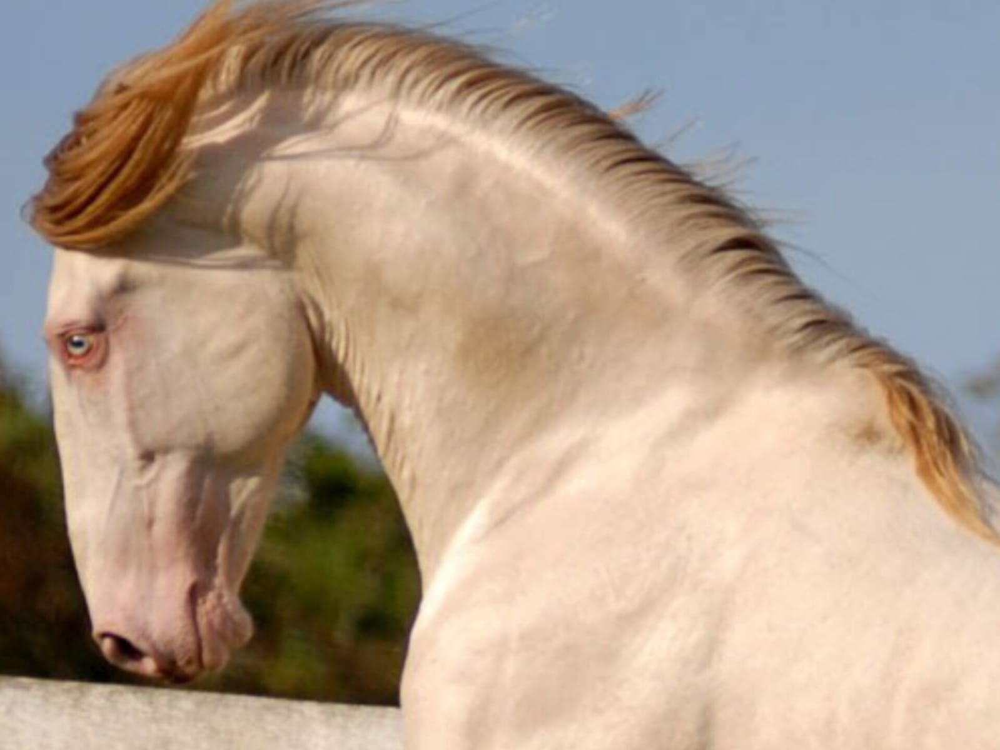
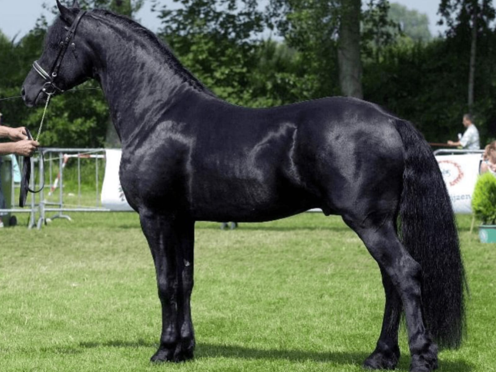
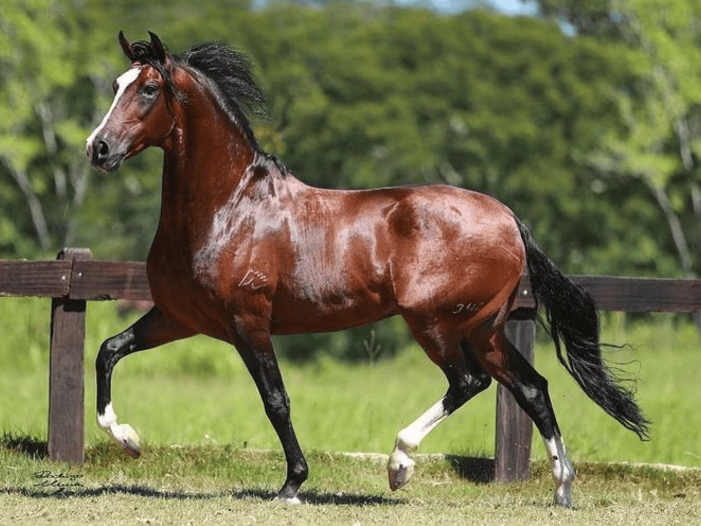
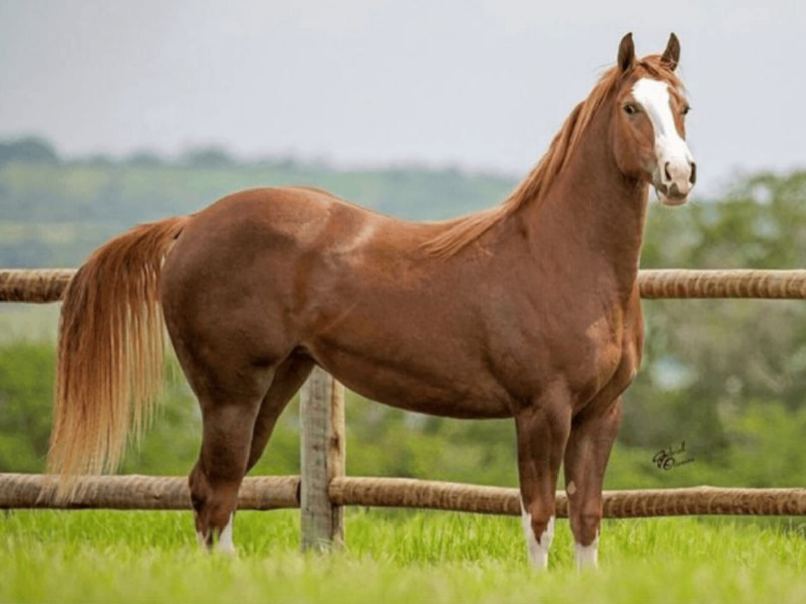
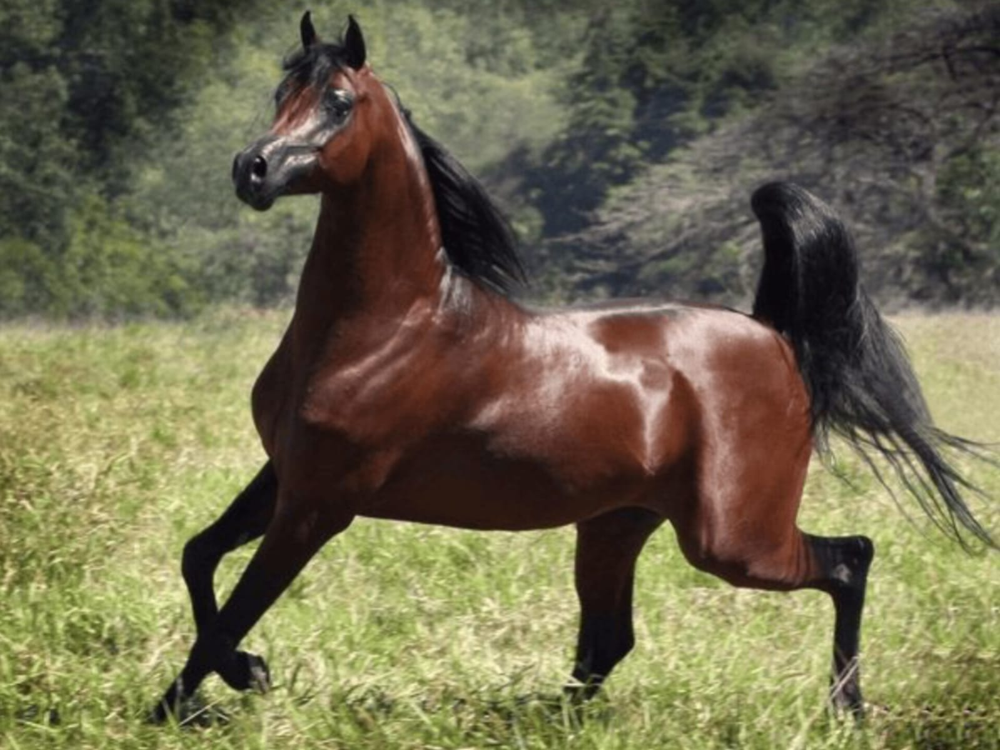

Guia de Raças
Puro-Sangue Lusitano
Entenda o que faz do Puro-Sangue Lusitano uma raça magnífica.
Friesian
Saiba mais sobre a elegância e história do Cavalo Frísio.
Mangalarga Marchador
Descubra os detalhes únicos do Mangalarga Marchador.
Quarto de Milha
Explore as características que tornam o Quarto de Milha especial.
Cavalo Árabe
Conheça mais sobre a origem e características do Cavalo Árabe.